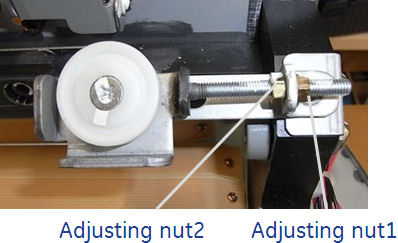
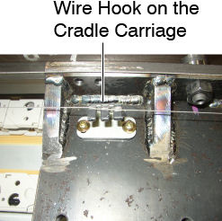
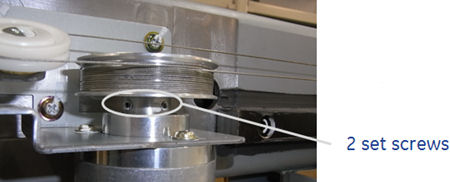
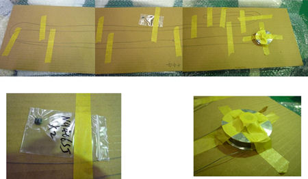
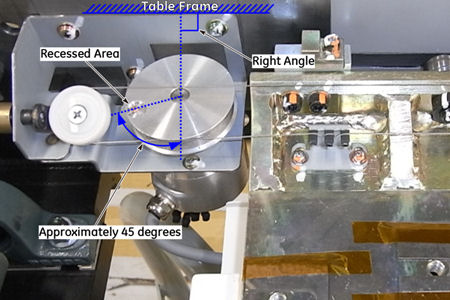
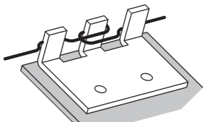
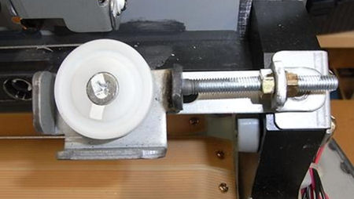
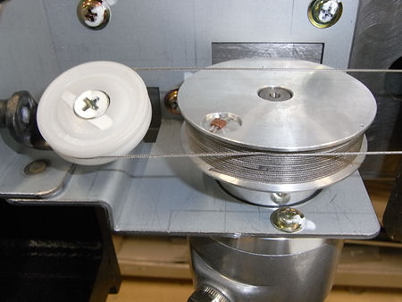
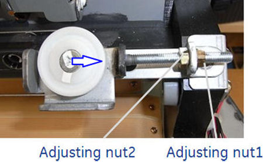
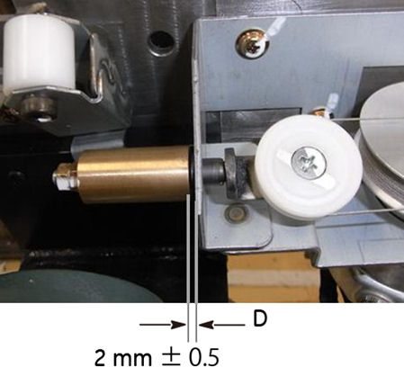

Operating Documentation
Direction 5193574-800, Rev# 22
LightSpeed 7.X Service Methods
Module Version 2.0, Version Date 11/21/11
Operating Documentation |
| Required Persons | Preliminary Reqs | Procedure | Finalization |
|---|---|---|---|
| 1 |
| Last Revised: | September 22, 2011 |
| Item | Qty | Effectivity | Part# | Manufacturer | |
|---|---|---|---|---|---|
| Cradle Wire | 1 | - | 5127502 | - | |
Raise the Table to maximum height.
Move the Cradle and IMS to OUT limit position.
Remove power from Table by turning off 120VAC, Axial Drive and HVDC switches on Service Switch Panel.
Remove the following Table components and covers:
Cradle
Top Cover (Right/Left)
Rear Top Cover
Rail Cover (Right/Left)
Top Plate (Front/Middle/Rear)
Front Top Cover
Tray F
Illustration 1: Table Covers

Loosen the adjusting nut1, to remove tension from the cradle wire.
Illustration 2: Adjusting Nut

Remove the cradle wire from the wire hook on the cradle carriage.
Illustration 3: Wire Hook

Loosen 2 set screws on the wire drum, and remove the wire drum from the cradle encoder, then remove the cradle wire assembly from the Table.
Illustration 4: Set Screws of the Wire Drum

Install the new cradle wire assembly:
Illustration 5: FRU Unit of the Cradle Wire Assembly

Move the cradle carriage to IN limit position until the carriage hits against the front stopper of the table.
Attache the wire drum to the cradle encoder, and tighten the 2 set screws (torque: 1.67 N-m), to fasten the wire drum.
Position the recessed area of the wire drum as shown in Illustration 6 below, and fix the drum with the adhesive tape (or an equivalent) to prevent the rotating of the drum.
Illustration 6: Wire Drum Positioning

Set the cradle wire to the wire hook as shown in illustration below.
Illustration 7: Wire Hook on the Cradle Carriage

Route the cradle wire as shown in Illustration 3, Illustration 8 and Illustration 9.
Illustration 8: Cradle Wire Routing (Rear)

Illustration 9: Cradle Wire Routing (Front)

Take off the adhesive tape from the wire drum.
Rotate the adjusting nut1 in the CW direction until the distance D is 2 ± 0.5 mm.
Illustration 10: Adjusting Nut 1

Illustration 11: Wire Tension

Move the cradle carriage In/Out limit position, and verify that the wire is properly wound onto the wire drum and the carriage moves smoothly.
Move the cradle carriage In and Out completely 5 cycles to ensure that the distance D is 2 ± 0.5 mm (see Illustration 11).
Tighten the adjusting nut2 to fix the position of the pulley (see Illustration 10).
Power up the Table from the Service Switch Panel.
Perform Cradle Characterization.
Turn off all 3 switches (Axial Drive, HVDC, 120VAC), and re-install the Table covers.